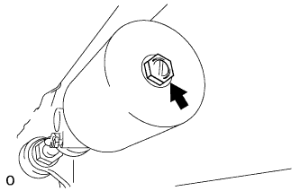
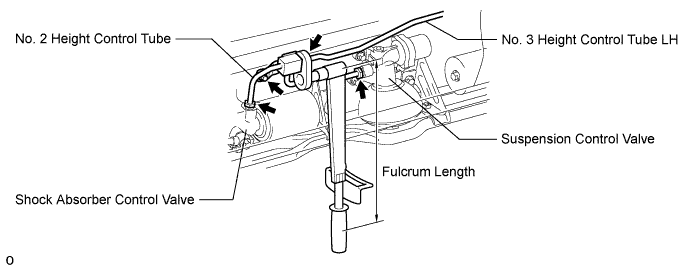
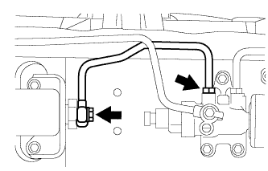
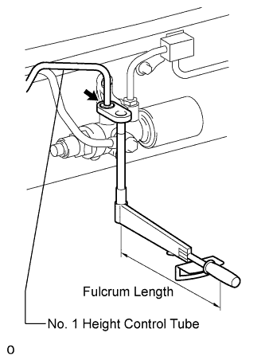

DAMPING FORCE CONTROL ACTUATOR (for Front Side) > INSTALLATION |
| 1. INSTALL FRONT SUSPENSION CONTROL VALVE ASSEMBLY LH |
 |
Install the control valve to the vehicle with the 3 bolts.
 |
Connect the control valve connector.
 |
Apply a small amount of suspension fluid to a new O-ring and new back-up ring and install then to the accumulator.
Install the accumulator to the control valve.
| 2. INSTALL FRONT SHOCK ABSORBER CONTROL VALVE ASSEMBLY LH |
Install the bleeder plug and bleeder plug cap to the control accumulator.
 |
Install the control valve to the vehicle with the 3 bolts.
 |
Connect the connector.
| 3. INSTALL FRONT NO. 2 SUSPENSION CONTROL ACCUMULATOR ASSEMBLY LH |
Apply a small amount of suspension fluid to a new O-ring and install it to the accumulator.
 |
Install the accumulator to the shock absorber control valve.
| 4. CONNECT NO. 2 SUSPENSION CONTROL PRESSURE HOSE |
Install a new gasket to the No. 2 suspension control pressure hose, then connect the pressure hose to the control valve with the union bolt.
| 5. INSTALL NO. 2 HEIGHT CONTROL TUBE LH |
Using a union nut wrench, connect the No. 2 control tube to the No. 3 height control tube, shock absorber control valve and control valve.
Install the No. 2 control tube with the bolt.

| 6. INSTALL FRONT NO. 1 SUSPENSION CONTROL ACCUMULATOR ASSEMBLY LH |
 |
Install the No. 1 suspension control accumulator to the frame with the 2 bolts.
| 7. INSTALL NO. 1 HEIGHT CONTROL TUBE LH |
 |
Install a new gasket to the No. 1 height control tube, then temporarily install No. 1 height control tube to the control valve and control accumulator with the union bolt and union nut.
 |
Using a union nut wrench, tighten the No. 1 height control tube.
 |
Tighten the union bolt.
| 8. BLEED AIR FROM SUSPENSION FLUID |
 |
With the engine stopped, fill the reservoir tank with fluid.
With the vehicle on a level surface, start the engine and set the vehicle height to NORMAL with the suspension control switch.
When the vehicle height becomes NORMAL and the pump stops, stop the engine.
 |
Connect a hose to the bleeder plug of the front left side or right side control valve, then loosen the bleeder plug.
After the fluid containing air stops coming out, retighten the bleeder plug.
 |
Connect a hose to the bleeder plug of the rear left side or right side control valve, then loosen the bleeder plug.
After the fluid containing air stops coming out, retighten the bleeder plug.
Repeat the previous 4 procedures until the fluid containing air stop coming out.
| 9. CHECK FLUID LEVEL IN RESERVOIR |
 |
With the vehicle empty, after setting the vehicle height to NORMAL from LO, check the indicator to make sure the vehicle height is NORMAL and check that the fluid level in the reservoir tank is within the specified range (MAX, MIN).
| 10. INSPECT FOR SUSPENSION FLUID LEAK |
Check that the union nuts shown in the illustration are tightened to the specified torque.
Check for fluid leakage from the parts and connections.

| 11. INSTALL HEIGHT CONTROL CYLINDER BRACKET ASSEMBLY |
Install the 3 brackets with the 6 bolts.

| 12. INSTALL HEIGHT CONTROL PROTECTOR PIPE |
Install the protector pipe with the 6 bolts.

| 13. INSTALL SIDE STEP ASSEMBLY LH |
Install the side step with the 6 bolts.